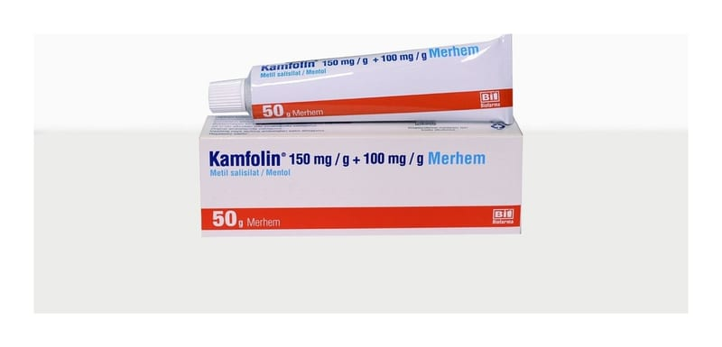

Kamfolin 150 mg/g+100 mg/g Merhem, 50 g

Ne için kullanılır
KT · Bölüm 1• KAMFOLİN beyaz renkli, homojen merhem formunda üretilmekte ve 50 g'lık tüpler halinde piyasaya sunulmaktadır. Merhem içeriğinde koyun yününün yağından elde edilen lanolin (susuz) bulunmaktadır.
• KAMFOLİN’deki etkin maddelerden biri olan metil salisilat, salisilik asit türevleri adı verilen bir ilaç grubuna aittir. Ağrı kesici (analjezik) ve iltihap giderici (antienflamatuar) özelliklere sahiptir.
Diğer etkin madde olan mentol ise, nane esansından elde edilen doğal bir bileşiktir. Yerel olarak kullanıldığında derideki damarları genişletir ve serinlik hissi verir.
KAMFOLİN aşağıdaki hastalıkların lokal tedavisinde ağrı kesici ve iltihap giderici olarak etkilidir: − Kireçlenme (osteoartrit), eklem iltihaplanması (romatoid artrit), eklem çevresindeki dokularda iltihaplanma (periartrit), eklem bölgesinde ağrılı şişlikler (bursit), tendon iltihabı (tendinit) ve tendon kılıfı iltihabı (tenosinevit) gibi romatizmal hastalıklar, − Ezilme ve burkulma gibi yumuşak doku travmaları, − Ağrı, inflamasyon ve kas gerginliği ile kendini gösteren kas iskelet sistemi hastalıkları.
KAMFOLİN haricen kullanılan bir ağrı kesici ve iltihap gidericidir. Ağrılı bölgelere uygulandığında bu bölgelerdeki damarları genişleterek serinlik hissi verir ve ağrıyı azaltır. Sinir ve kasların gevşemesini sağlar.